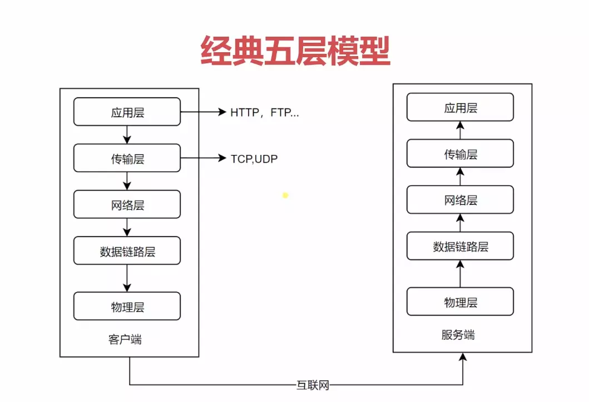
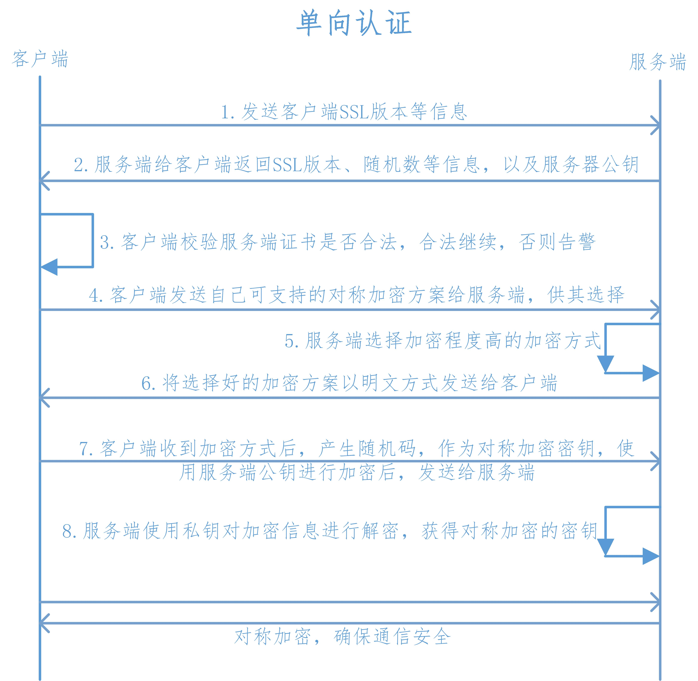
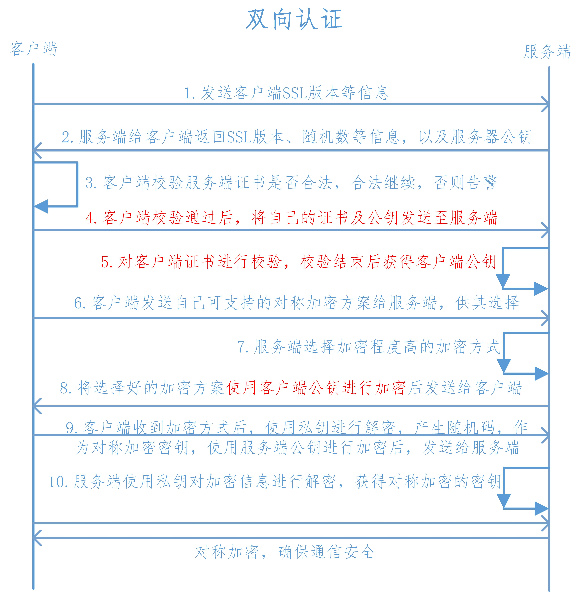
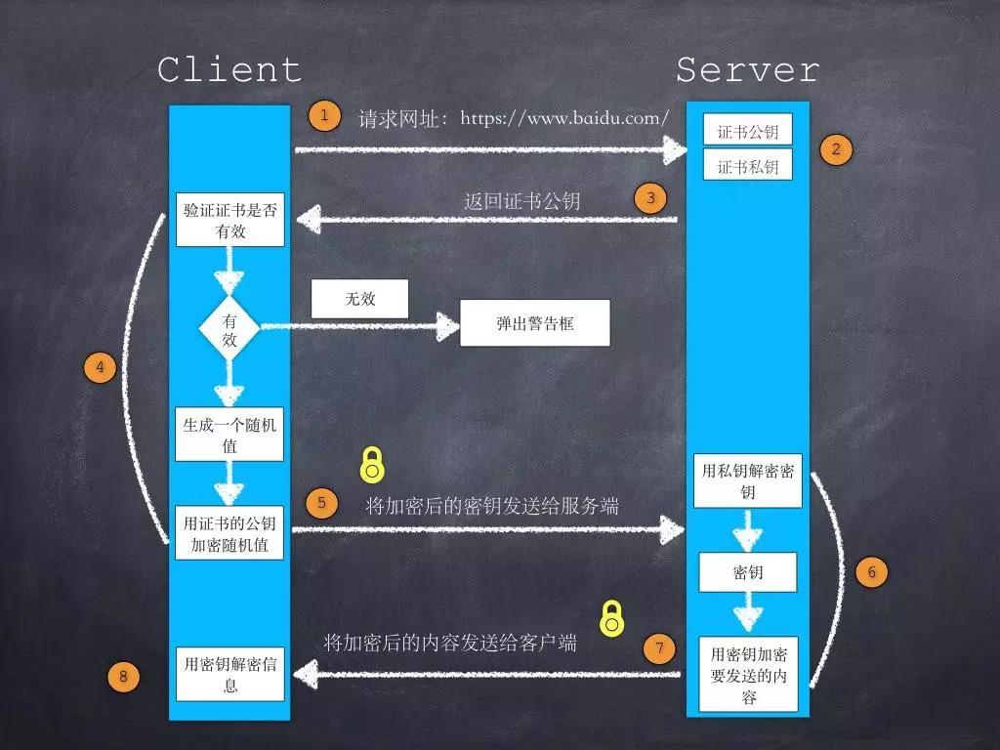
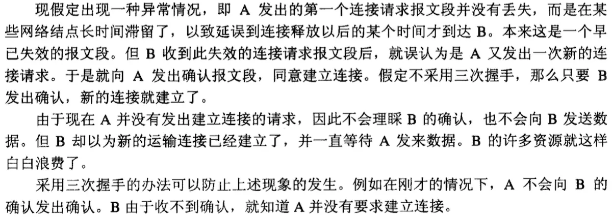

网络协议分层–经典五层模型

https单向认证过程

https双向认证过程

https通信过程

为什么要采用三次握手，两次不行吗

那么为什么是4次挥手呢？tcp握手的时候为何ACK(确认)和SYN(建立连接)是一起发送。挥手的时候为什么是分开的时候发送呢？
- 因为当Server端收到Client端的SYN连接请求报文后，可以直接发送SYN+ACK报文。其中ACK报文是用来应答的，SYN报文是用来同步的。但是关闭连接时，当Server端收到FIN报文时，很可能并不会立即关闭 SOCKET，
所以只能先回复一个ACK报文，告诉Client端，”你发的FIN报文我收到了”。只有等到我Server端所有的报文都发送完了，我才能发送FIN报文，因此不能一起发送。故需要四步握手。
为什么客户端最后还要等待2MSL？
- 保证客户端发送的最后一个ACK报文能够到达服务器，因为这个ACK报文可能丢失，站在服务器的角度看来，我已经发送了FIN+ACK报文请求断开了，客户端还没有给我回应，应该是我发送的请求断开报文它没有收到，于是服务器又会重新发送一次，而客户端就能在这个2MSL时间段内收到这个重传的报文，接着给出回应报文，并且会重启2MSL计时器。
- 防止类似与“三次握手”中提到了的“已经失效的连接请求报文段”出现在本连接中。客户端发送完最后一个确认报文后，在这个2MSL时间中，就可以使本连接持续的时间内所产生的所有报文段都从网络中消失。这样新的连接中不会出现旧连接的请求报文。
四次挥手
- 假设Client端发起中断连接请求，也就是发送FIN报文。Server端接到FIN报文后，意思是说”我Client端没有数据要发给你了”，但是如果你还有数据没有发送完成，则不必急着关闭Socket，可以继续发送数据。
所以你先发送ACK，”告诉Client端，你的请求我收到了，但是我还没准备好，请继续你等我的消息”。这个时候Client端就进入FIN_WAIT状态，继续等待Server端的FIN报文。当Server端确定数据已发送完成，
则向Client端发送FIN报文，”告诉Client端，好了，我这边数据发完了，准备好关闭连接了”。Client端收到FIN报文后，”就知道可以关闭连接了，但是他还是不相信网络，怕Server端不知道要关闭，
所以发送ACK后进入TIME_WAIT状态，如果Server端没有收到ACK则可以重传。“，Server端收到ACK后，”就知道可以断开连接了”。Client端等待了2MSL后依然没有收到回复，则证明Server端已正常关闭，那好，
我Client端也可以关闭连接了。Ok，TCP连接就这样关闭了！